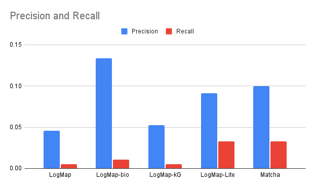
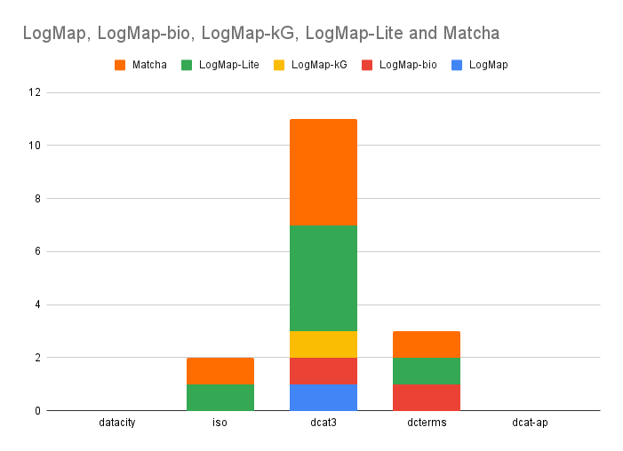

This track aims at evaluating the ability of systems to deal with the schema metadata matching task, in particular, with a subset of a collection of crosswalks from fifteen research data schemas to Schema.org [1].
This year a subset of the 16 metadata schemas aligned to schema.org has been considered. This subset involves: Data Catalogue Vocabulary (DCAT-v3), Data Catalogue Vocabulary - Application Profile (DCAT-AP), DataCity, Dublin Core (DC), and ISO19115-1 schemas (ISO).
All the systems registered to OAEI were run (besides the fact that only LogMap has been registered to participate to all tracks and no system has been specifically registered to the Crosswalks task).
The systems have been executed on a Ubuntu Linux machine configured with 32GB of RAM running under a Intel Core CPU 2.00GHz x8 processors. All measurements are based on a single run.
Figure below shows the results for the systems that have generated correspondences. While generating a few number of correct correspondences (as detailed in the table below), precision is higher with respect to recall for all systems. Most of the generated correspondences still involve properties where labels are equal, for instance: https://schema.org/distribution and http://www.w3.org/ns/dcat#distribution. In terms of F-measure, Matcha and LogMap-Lite have the best and similar performance.

With respect to the pairs, a higher number of correspondences has been generated for the pairs involving DCAT-v3. LogMap-Lite and Matchat are the systems that are able to deal with a higher number of matching pairs.

In 2022, this track run for the first time. As last year, we have used the schemas for which an RDF serialization is available. Last year, similar to this year, only Matcha, LogMap and LogMapLite were able to generate non empty alignments, with LogMapLite being able to generate a higher number of correspondences. In terms of precision, Matcha and LogMapLite had a higher precision in detriment of recall.
This is a challenging task involvind different ways of representing properties. Few systems are still able to deal with such representations and there is room for many improvements.
This track is organized by
[1] Wu, M., Hagan, P., Cecconi, B., Richard, S. M., Verhey, C., & RDA Research Metadata Schemas WG. (2023). A Collection of Crosswalks from Fifteen Research Data Schemas to Schema.org. Research Data Alliance. https://doi.org/10.15497/RDA00069